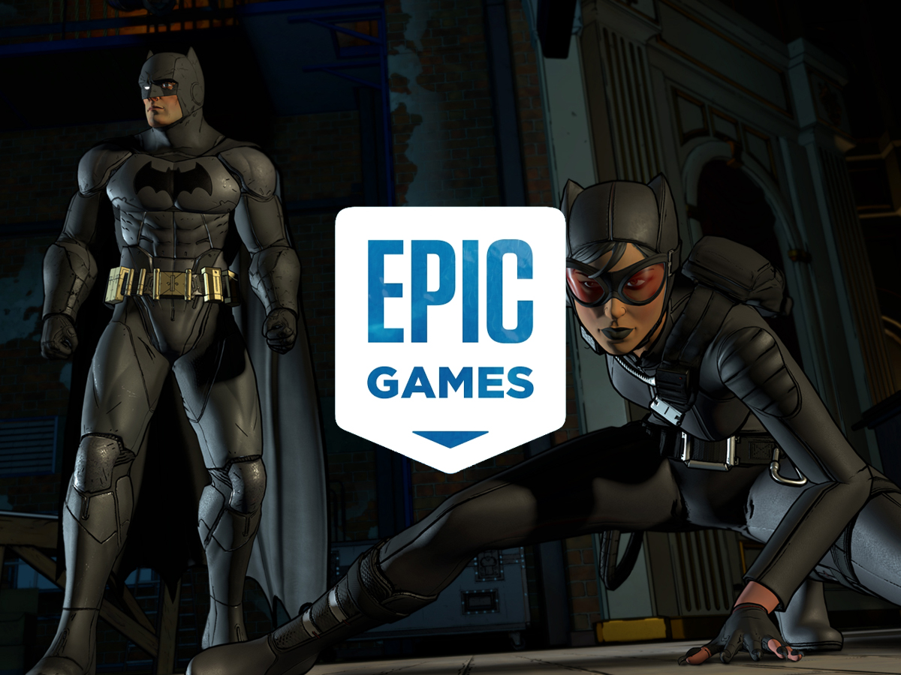

Los mystery games de la Epic MEGA Sale ya están revelados, y la primera tanda vale más de lo que la mayoría esperaba. Desde el 14 de mayo y hasta el miércoles 21, podés reclamar dos juegos completamente gratis en la Epic Games Store: Sunderfolk y The Telltale Batman Shadows Edition. El valor combinado a precio normal es USD 79.95.
Sunderfolk: el RPG co-op táctico que sorprende
Sunderfolk es un juego de rol táctico por turnos pensado para jugar en grupo. Cada jugador controla un personaje distinto —un cuervo arcanista, una axolotl piromaníaca, una cabra exploradora, un murciélago bardo, un oso polar berserker o una comadreja rogue— y la gracia está en coordinar las habilidades de carta de todos en cada turno.
Lo que lo hace especial es el control: podés jugar online con mouse y teclado, o en modo local usando el teléfono como mando, lo que lo convierte en algo casi de board game digital. Tiene entre 20 y 30 horas de campaña y una narratora que lo vocea todo. En Steam acumula más de 1.600 reviews con 94% positivo. Es raro que algo tan específico tenga esa recepción tan buena.
Lo mejor para quién: grupos de 2 a 4 que quieran algo cooperativo con cerebro, sin el caos de un shooter. Lo peor: en solitario pierde bastante del encanto.
The Telltale Batman Shadows Edition: diez episodios en uno
El segundo juego es en realidad una colección completa. The Telltale Batman Shadows Edition incluye los dos juegos episódicos de Telltale: Batman: The Telltale Series (2016) y Batman: The Enemy Within (2017), con todos sus episodios y dos DLCs adicionales. En total, diez episodios de aventura point-and-click con decisiones que moldean la historia.
El agregado de esta edición especial es el Shadows Mode: un filtro noir en alto contraste blanco y negro, inspirado en el estilo del cómic clásico, que le cambia bastante la atmósfera al juego. El primero tiene 86% positivo en Steam con más de 7.600 reviews; el segundo llega al 94% con más de 4.200.
Para los que todavía no los jugaron, es una oportunidad enorme. Para los que ya los terminaron, el Shadows Mode es un buen motivo para revistarlos en una noche.
¿Cómo reclamarlos?
Entrá a store.epicgames.com/free-games, logueate con tu cuenta de Epic y reclamá ambos juegos antes del 21 de mayo a las 11 AM ET (12 PM hora Argentina). Una vez reclamados quedan en tu biblioteca para siempre, sin importar lo que pase después.
La semana siguiente, el 21 de mayo, se revelan los próximos dos mystery games de la MEGA Sale. El año pasado entregaron Dead Island 2 y Deathloop en instancias parecidas. Vale la pena seguirlo.